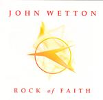

| Artist: | John Wetton |
| Title: | Rock Of Faith |
| Label: | Giant Electric Pea GEPCD 1033 |
| Length(s): | minutes |
| Year(s) of release: | 2003 |
| Month of review: | [06/2003] |
| 1) | Mondrago | 2.12 |
| 2) | Rock Of Faith | 3.57 |
| 3) | A New Day | 5.16 |
| 4) | I've Come To Take You Home | 4.19 |
| 5) | Who Will Light A Candle? | 3.39 |
| 6) | Nothing's Gonna Stand In My Way | 5.36 |
| 7) | Altro Mondo | 3.42 |
| 8) | I Believe In You | 5.22 |
| 9) | Take Me To The Waterline | 6.08 |
| 10) | I Lay Down | 4.04 |
| 11) | When You Were Young | 1.34 |
Rock Of Faith has the well-known John Wetton timbre, a voice known from having sung in King Crimson, UK and Asia, all important bands for the progressive genre as we know it (KC's Red and UK's Danger Money are classics in my book). But these days have gone and Wetton is now in the GEP stable turning out songoriented albums (I remember him saying that Fripp always succeeded in turning a simple song into something complicated). Most of the songs are on the melodramatic side, something which is enhanced by his emotional vocals. This is especially apparent on the strong Rock Of Faith, which also features some church choir like vocals. Is God his Rock Of Faith? Writing You in the some of the lines makes it seem so. Anyway, a strong opener with good melodies, Wetton in good form and a powerful rhythm section. The song was written together with Clive Nolan. They ought to try that once again.
A New Day opens dreamy and one might be tempted to expect a mellow song, but soon the organs ride high, the rhythm guitars drive you on. The chorus is a bombastic one, reminiscent of the chorus of Nights In White Satin. A long instrumental passage terminates the song.
With I've Come To Take You Home we add some cello to the pallette and piano as well. The sung was co-written with Geoffrey Downes. This song is more in the lines of the previous Wetton albums. Very song oriented and plenty of harmony vocals, making for a mellow song. Later, we get the obligatory guitar solo and more beat. A bit too predictable.
Richard Palmer-James is a steady collaborator with Wetton and Who Will Light A Candle? is by the pair of them. A rather melodramatic, somewhat sad sounding track with string orchestra abounding.
Nothing's Gonna Stand In My Way is a catchy mid-tempo track with the guitar adding some edge to it all. The singalong chorus is typical Asia. Some nice brimming organ there as well and some sax to add to the flavour.
Altro Mondo is like the opener an instrumental, only keyboards and angelic in overall feel. I Believe In You is a piano dominated ballad, very sweet and melodic. A bit too sweet for me. However, then the guitar sets in after a few minutes and the sax comes back in as well. The song now has a strong Supertramp feel.
Take Me To The Waterline combines mellow verses with an up-beat chorus and powerful chords on the guitar, which lend the song much of its energy. I Lay Down opens with cello which always helps when you want to raise a sad mood. A sugary vocal melody and a chamber orchestra approach are the main constituents, but the song does have a bombastic finale.
When You Were Young is the short harmony vocal closer, a reprise of I Believe In You.